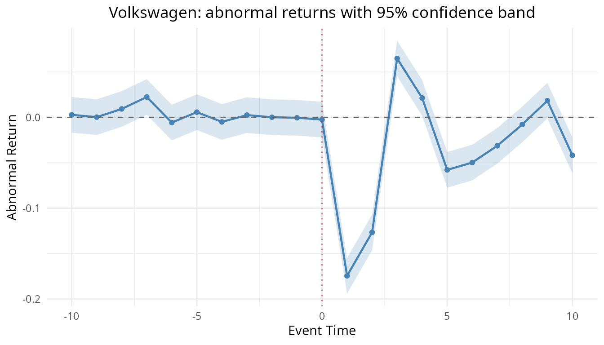
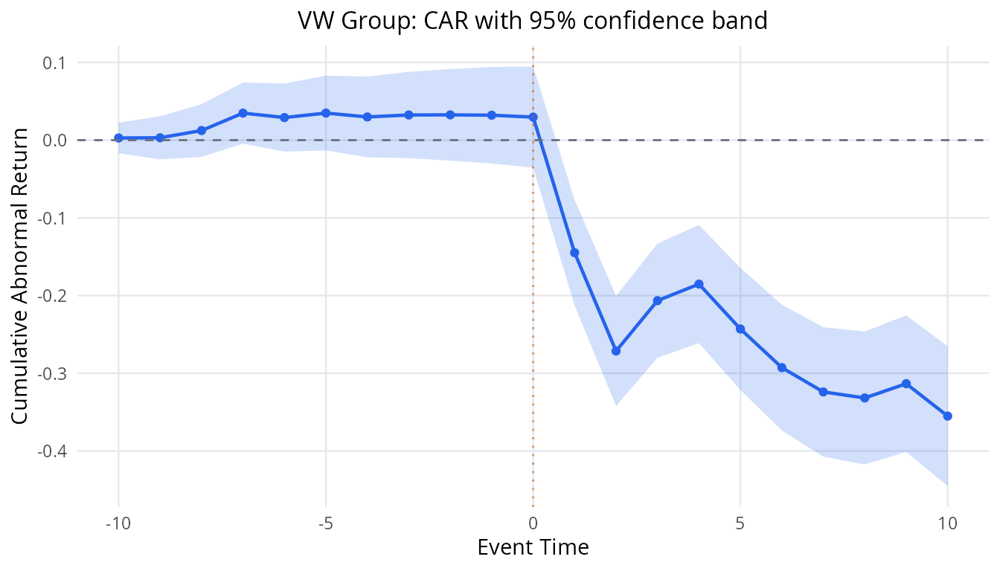
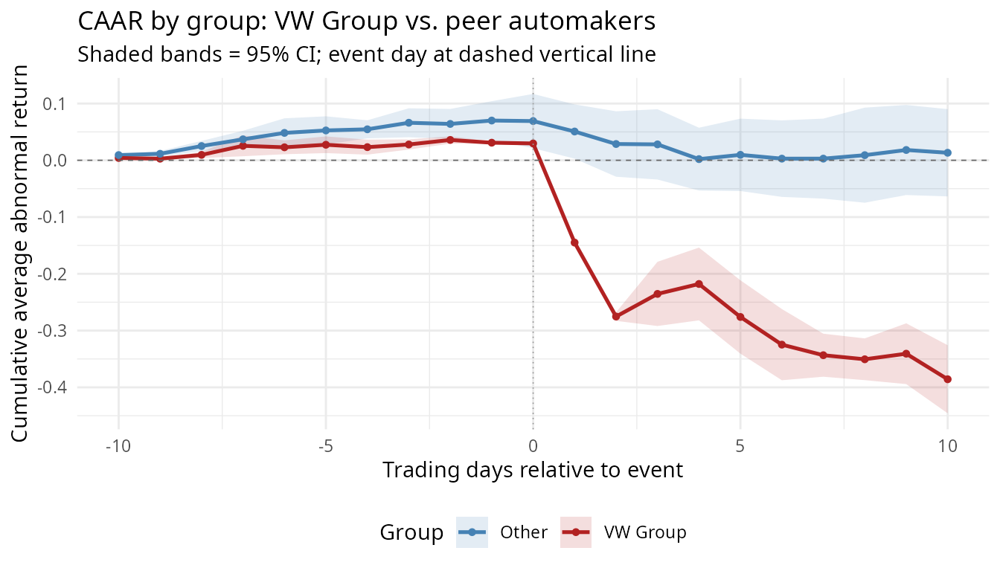

The Grounded AI Advisor: A Dieselgate Multi-Automaker Walkthrough
Simon Mueller
2026-09-10
Source:vignettes/ai-advisor.Rmd
ai-advisor.RmdWhy the advisor exists
Event study analysis produces a lot of numbers — abnormal returns, cumulative abnormal returns, t-statistics, normality p-values, autocorrelation diagnostics — and interpreting them correctly requires methodological judgment that is easy to get wrong. A large language model (LLM) is a tempting tool for that interpretation, but a naive LLM will happily fabricate a plausible number, cite a t-statistic the analysis never computed, or recommend a test on the basis of a diagnostic that does not exist.
EventStudy’s advisor is built so that this cannot happen. Its governing rule is a single grounding invariant:
The advisor never fabricates a number. Every claim it returns is provably tied to a diagnostic the package actually computed.
How it works: two layers
The advisor is deliberately split into two layers.
The deterministic offline grounding layer. This is pure R with no network access, no API key, and no optional dependencies required. It harvests the already-computed statistical signals from a fitted task (
es_diagnostics()), matches them against a curated, peer-reviewed knowledge base of methodology rules, and returns rule-based advice (recommend_stat(),flag_robustness()). This layer is always available and always reproducible.The LLM interpretation layer. This is optional. When you supply a provider (
es_advise(..., provider = provider("anthropic"))), the LLM is given only the package-computed diagnostics and the pre-grounded knowledge-base recommendations, and it is asked to write the prose interpretation around them — not to invent new numbers.
The grounding invariant is enforced by a runtime guard in R, independent of the prompt. After the LLM responds, every recommendation’s cited evidence is re-checked against the actual diagnostics: any recommendation whose evidence cites a diagnostic key that is absent, or a value that mismatches beyond a numerical tolerance, is dropped, one caveat is recorded, and exactly one warning is emitted. The LLM cannot talk its way past the guard because the guard does not read the prompt — it reads the numbers.
This vignette walks through both layers on a real dataset. The deterministic layer runs live; the LLM layer is shown as a captured static example, because CRAN builds run offline with no API key (see the note at the end).
The multi-automaker dieselgate example
The package bundles a frozen dataset, dieselgate,
containing daily adjusted prices for four German
automakers and the DAX benchmark index (^GDAXI)
around the 2015 emissions scandal. On 2015-09-18 the U.S. Environmental
Protection Agency issued its Notice of Violation to Volkswagen; the
share-price crash lands on the following trading days.
The dataset covers two groups:
- “VW Group”: VOW.DE (Volkswagen AG) and PAH3.DE (Porsche Automobil Holding SE) — the firms directly implicated in the scandal.
- “Other”: BMW.DE (BMW AG) and MBG.DE (Mercedes-Benz Group AG) — peer automakers with no direct connection to the emissions cheating.
This two-group structure lets us ask a natural research question: was the crash idiosyncratic (VW Group only) or did it contaminate the broader German automotive sector? The multi-event statistics (AAR/CAAR per group) answer it directly.
dieselgate is a named list with four tibbles:
firm (all firms stacked), index, a four-row
request tibble carrying the group assignments, and
provenance meta. See ?dieselgate for the full
schema.
library(EventStudy)
data(dieselgate)
names(dieselgate)
#> [1] "firm" "index" "request" "meta"
dieselgate$request[, c("event_id", "firm_symbol", "group",
"event_window_start", "event_window_end",
"estimation_window_length")]
#> # A tibble: 4 × 6
#> event_id firm_symbol group event_window_start event_window_end
#> <int> <chr> <chr> <int> <int>
#> 1 1 VOW.DE VW Group -10 10
#> 2 2 PAH3.DE VW Group -10 10
#> 3 3 BMW.DE Other -10 10
#> 4 4 MBG.DE Other -10 10
#> # ℹ 1 more variable: estimation_window_length <int>We build the task from the three tibbles and run the standard
pipeline with the default ParameterSet, which includes both
single-event statistics (AR/CAR t-tests) and the cross-sectional t-test
(CSectT) for multi-event AAR/CAAR by group.
task <- EventStudyTask$new(
dieselgate$firm,
dieselgate$index,
dieselgate$request
)
task <- run_event_study(task, ParameterSet$new())VW’s single-firm crash
The market model estimated on the pre-event window for Volkswagen has a beta near 1.1 and an R-squared around 0.70 — a well-behaved fit. The event window tells the story of the crash clearly:
ar <- task$get_ar(1L) # event_id 1 = VOW.DE
car <- task$get_car(1L)
# Abnormal returns on the event day (0) and the first three days after
ar[ar$relative_index %in% c(0, 1, 2, 3), c("relative_index", "abnormal_returns")]
#> # A tibble: 4 × 2
#> relative_index abnormal_returns
#> <int> <dbl>
#> 1 0 -0.00245
#> 2 1 -0.174
#> 3 2 -0.127
#> 4 3 0.0649
# Cumulative abnormal return at the end of the event window
tail(car[, c("relative_index", "car")], 1L)
#> # A tibble: 1 × 2
#> relative_index car
#> <int> <dbl>
#> 1 10 -0.355The first trading day after the disclosure shows an abnormal return
of roughly -17%, followed by roughly
-13% the next day, and the cumulative abnormal return
over the [-10, +10] window reaches about
-35%. This is a sharp, economically enormous, and
highly statistically significant crash.
Seeing the crash: VW abnormal returns with confidence interval
The package ships a built-in event-study plot:
plot_event_study(type = "ar") draws each day’s abnormal
return as a point-and-line path with a 95% confidence band
(+/- z * sigma) around zero, so the days whose abnormal
return falls outside the band are the individually significant ones. The
two trading days after the disclosure drop far below the band – the
crash made visible.
plot_event_study(task, type = "ar", event_id = 1L, confidence_level = 0.95,
title = "Volkswagen: abnormal returns with 95% confidence band")
VW cumulative abnormal return with confidence band
plot_event_study(task, type = "car", event_id = 1L, confidence_level = 0.95,
title = "VW Group: CAR with 95% confidence band")
By the end of the window the cumulative abnormal return has reached roughly -35%, well outside the 95% confidence band — the crash is unambiguous.
Multi-group results: idiosyncratic vs. contagion
The cross-sectional test (CSectT) aggregates the
individual firm events within each group into average abnormal returns
(AAR) and cumulative average abnormal returns (CAAR). Each group is
treated separately.
vw_caar <- task$aar_caar_tbl[task$aar_caar_tbl$group == "VW Group", ]$CSectT[[1]]
other_caar <- task$aar_caar_tbl[task$aar_caar_tbl$group == "Other", ]$CSectT[[1]]
# VW Group CAAR at end of event window
tail(vw_caar[, c("relative_index", "aar", "caar", "caar_t")], 1L)
#> # A tibble: 1 × 4
#> relative_index aar caar caar_t
#> <int> <dbl> <dbl> <dbl>
#> 1 10 -0.0450 -0.386 -12.6
# Other CAAR at end of event window
tail(other_caar[, c("relative_index", "aar", "caar", "caar_t")], 1L)
#> # A tibble: 1 × 4
#> relative_index aar caar caar_t
#> <int> <dbl> <dbl> <dbl>
#> 1 10 -0.00490 0.0132 0.338The contrast is stark:
-
VW Group (VOW.DE + PAH3.DE): CAAR at +10 ≈
-39% with
caar_t ≈ -12.6— strongly significant. -
Other (BMW.DE + MBG.DE): CAAR at +10 ≈
+1% with
caar_t ≈ 0.34— indistinguishable from zero.
The shock is idiosyncratic: VW Group firms crater while peer automakers barely move. There is no measurable contagion to the broader German automotive sector.
Group CAAR comparison plot
# Build a combined CAAR comparison with CI ribbons using the computed stats.
# VW Group
vw_plt <- vw_caar
other_plt <- other_caar
# Compute 95% CI half-width from caar / caar_t
z_val <- stats::qnorm(0.975)
vw_plt$se <- ifelse(vw_plt$caar_t != 0,
abs(vw_plt$caar / vw_plt$caar_t), NA_real_)
other_plt$se <- ifelse(other_plt$caar_t != 0,
abs(other_plt$caar / other_plt$caar_t), NA_real_)
vw_plt$ci_lower <- vw_plt$caar - z_val * vw_plt$se
vw_plt$ci_upper <- vw_plt$caar + z_val * vw_plt$se
other_plt$ci_lower <- other_plt$caar - z_val * other_plt$se
other_plt$ci_upper <- other_plt$caar + z_val * other_plt$se
vw_plt$group <- "VW Group"
other_plt$group <- "Other"
combined <- dplyr::bind_rows(
vw_plt[, c("relative_index", "caar", "ci_lower", "ci_upper", "group")],
other_plt[, c("relative_index", "caar", "ci_lower", "ci_upper", "group")]
)
group_colours <- c("VW Group" = "firebrick", "Other" = "steelblue")
ggplot2::ggplot(combined,
ggplot2::aes(x = relative_index, colour = group, fill = group)) +
ggplot2::geom_ribbon(ggplot2::aes(ymin = ci_lower, ymax = ci_upper),
alpha = 0.15, colour = NA) +
ggplot2::geom_line(ggplot2::aes(y = caar), linewidth = 0.9) +
ggplot2::geom_point(ggplot2::aes(y = caar), size = 1.2) +
ggplot2::geom_hline(yintercept = 0, linetype = "dashed", colour = "grey40",
linewidth = 0.3) +
ggplot2::geom_vline(xintercept = 0, linetype = "dotted", colour = "grey60",
linewidth = 0.3) +
ggplot2::scale_colour_manual(values = group_colours) +
ggplot2::scale_fill_manual(values = group_colours) +
ggplot2::labs(
title = "CAAR by group: VW Group vs. peer automakers",
subtitle = "Shaded bands = 95% CI; event day at dashed vertical line",
x = "Trading days relative to event",
y = "Cumulative average abnormal return",
colour = "Group",
fill = "Group"
) +
ggplot2::theme_minimal() +
ggplot2::theme(legend.position = "bottom")
The plot makes the finding unmistakable: the red (VW Group) path dives steeply from day +1 and never recovers, while the blue (Other) path hovers near zero throughout. The confidence bands for VW Group lie entirely below zero from day +2 onward; those for Other always straddle zero.
What runs offline (deterministic)
Everything in this section evaluates live, with no API key and no network access. This is the always-available grounding layer.
Diagnostics
es_diagnostics() harvests the already-computed signals
from the fitted task into a structured, JSON-ready object. It recomputes
nothing.
diag <- es_diagnostics(task)
diag
#> Event Study Diagnostics
#> =======================
#> Events total: 4
#> Events shown: 4 (full detail)
#> Events valid: 4
#>
#> Estimation window (medians across shown events):
#> R-squared: 0.7361
#> Shapiro-Wilk p: 0.0039
#> DW statistic: 2.0864
#>
#> Event window (cross-sectional):
#> CAR IQR: 0.36409
#> Overlap pairs: 0Key signals: the estimation-window R-squared is high (~0.74 median across four events), but the Shapiro-Wilk normality p-value is well below 0.05 (~0.004), so the residuals are non-normal — and there are only four events, two per group, so large-sample cross-sectional tests should be interpreted cautiously.
Recommended statistics
recommend_stat() matches the diagnostics against the
knowledge base’s statistical-choice rules and returns severity-ranked,
citation-backed advice — deterministically.
recommend_stat(diag)
#> Offline Event Study Advice
#> ==========================
#> Source: offline_kb
#> Deterministic: TRUE
#> Rules matched: 2
#>
#> [WARNING] KB-NONNORM-NONPAR (citation: BrownWarner1985)
#> Recommendation: Non-normality detected in estimation-window residuals for >= 50% of events (Shapiro-Wilk p < 0.05). Consider non-parametric alternatives: Sign Test or Rank Test (Corrado 1989) are robust to departures from normality. Brown & Warner (1985) document that parametric tests lose size control under non-normal return distributions. [Threshold: 50% of events — ASSUMED, adjustable]
#>
#> [WARNING] KB-VAR-INCREASE-BMP (citation: BMP1991)
#> Recommendation: High CAR dispersion (IQR > 0.10 or SD > 0.15) suggests event-induced variance increase, which inflates Patell Z rejection rates. Use the BMP (Boehmer-Musumeci-Poulsen) test, which standardizes by the event-window variance and is specifically designed for this case. [Thresholds: IQR > 0.10, SD > 0.15 — ASSUMED, adjustable]Because the estimation-window residuals fail the normality test, the KB fires a rule recommending non-parametric alternatives (Sign Test, Rank Test) that are robust to departures from normality, citing Brown & Warner (1985). This recommendation is grounded in the actual Shapiro-Wilk p-value the package computed.
Robustness flags
flag_robustness() matches the diagnostics against the
robustness rules.
flag_robustness(diag)
#> Offline Event Study Advice
#> ==========================
#> Source: offline_kb
#> Deterministic: TRUE
#> Rules matched: 1
#>
#> [WARNING] KB-SMALL-N (citation: BrownWarner1985)
#> Recommendation: Very few valid events (n < 10). The cross-sectional t-test relies on a large-sample normal approximation that is unreliable with fewer than ~10 events. Non-parametric tests (Sign Test, Rank Test) are preferred in small samples, as documented by Brown & Warner (1985). Interpret parametric p-values cautiously. [Threshold: n < 10 — ASSUMED, adjustable]The KB flags the small-sample problem: with only two events per group, the cross-sectional t-test’s large-sample normal approximation is unreliable and parametric p-values should be interpreted cautiously. Again, this flag is tied directly to the computed event count.
Both calls are pure R. They return the same answer on every machine, every time, with no external service involved.
What the LLM adds (shown static)
The deterministic layer above tells you which tests to consider and why, but it does so in terse, rule-based prose. The optional LLM layer takes the same grounded diagnostics and pre-grounded recommendations and writes a fuller, narrative interpretation around them — without inventing any numbers.
You would invoke it like this:
# Requires an LLM provider and, for Anthropic/OpenAI-compatible providers,
# the optional `httr2` + `jsonlite` Suggests and an API key in the environment.
p <- provider("anthropic") # or provider("openai_compatible", ...)
advice <- es_advise(diag, task_type = "recommend_stat", provider = p)
print(advice)The block below is a captured, illustrative example
of what print(advice) returns for this multi-automaker
dieselgate result. It is not executed at build time
(see the note that follows). Every number it cites — beta ~1.09,
R-squared ~0.74, the Shapiro-Wilk p-value, the VW Group CAAR and its
t-statistic, the near-zero Other CAAR — is one the live deterministic
layer above already produced; the LLM only supplies the surrounding
prose, and the runtime guard would drop any recommendation citing a
diagnostic that did not match.
Event Study Advice
==================
Source: anthropic
Task type: recommend_stat
Deterministic: FALSE
Recommendations: 1
Interpretation:
The market model is well specified across all four events (median estimation-window
R-squared approximately 0.74), so the estimated normal-return benchmark is credible.
Against that benchmark the Dieselgate disclosure produced sharply asymmetric effects
across the two groups. For the VW Group (VOW.DE and PAH3.DE), the average abnormal
return was approximately -17% on day +1 and -13% on day +2, cumulating to a
cumulative average abnormal return (CAAR) of about -39% at day +10 (CAAR
t-statistic approximately -12.6) — a crash that is large, rapid, and
statistically unambiguous. For the peer automakers (BMW.DE, MBG.DE), the CAAR
at day +10 is approximately +1% (t-statistic approximately 0.34), statistically
indistinguishable from zero. The shock is idiosyncratic: there is no measurable
contagion to the broader German automotive sector.
However, the estimation-window residuals fail the Shapiro-Wilk normality test
(p approximately 0.004), which undermines the distributional assumptions of
the standard parametric AR/CAR t-tests, and the two-firm-per-group design means
the cross-sectional t-test's large-sample normal approximation is unreliable.
[1] Consider non-parametric test statistics (Sign Test, Rank Test)
Kind: stat_choice
Effect: Preserves test size when estimation-window residuals are non-normal.
Evidence:
estimation_window.shapiro_p = 0.0039 (threshold 0.05, below)
Caveats:
- With only two events per group, the cross-sectional t-test's large-sample
approximation is unreliable; lean on the individual event-level time-series
standard errors and non-parametric tests.
- The VW Group crash coincides with heavy news flow and possible confounding
events (regulatory statements, credit-rating actions); attribute the full CAAR
to the Dieselgate disclosure only with that caveat in mind.
- The near-zero Other CAAR supports an idiosyncratic interpretation, but with
two firms per group the power to detect modest contagion is limited.
Advisor Pro (waitlist): richer, corpus-grounded interpretation.Why this block is not evaluated at build time
This vignette is built by CRAN and by R CMD build in an
environment that has no network access and no API key,
and the optional AI Suggests (httr2, jsonlite)
may not be installed. A live es_advise() call with a
provider would need all three. So the LLM chunk is marked
eval = FALSE and its output is shown as the static block
above. The deterministic chunks (es_diagnostics(),
recommend_stat(), flag_robustness())
do run live, because they are pure R and need nothing
external.
This is the whole point of the two-layer design: the grounded, reproducible layer is always available and always runs; the LLM layer is an optional interpretation on top, and it is held to the same grounding invariant by a runtime guard whether or not you can see it execute here.
Summary
- The advisor never fabricates a number — the grounding invariant.
- The deterministic layer
(
es_diagnostics(),recommend_stat(),flag_robustness()) is pure, offline R and runs live everywhere. - The LLM layer (
es_advise()with a provider) writes prose around the same grounded diagnostics and is policed by a runtime guard. - On the bundled
dieselgatemulti-automaker example, the pipeline recovers a VW Group CAAR of approximately -39% (strongly significant) while the peer automaker group shows near-zero CAAR (not significant), the deterministic layer recommends non-parametric tests (non-normal residuals) and flags the small-sample caveat, and the LLM layer turns those grounded facts into a readable interpretation. - The CI bands on the CAR and CAAR plots make the statistical certainty of the crash visually immediate; the group comparison plot makes the idiosyncratic nature of the shock unmistakable.
See ?es_diagnostics, ?recommend_stat,
?flag_robustness, ?es_advise, and
?provider for the full API, and ?dieselgate
for the dataset’s provenance.